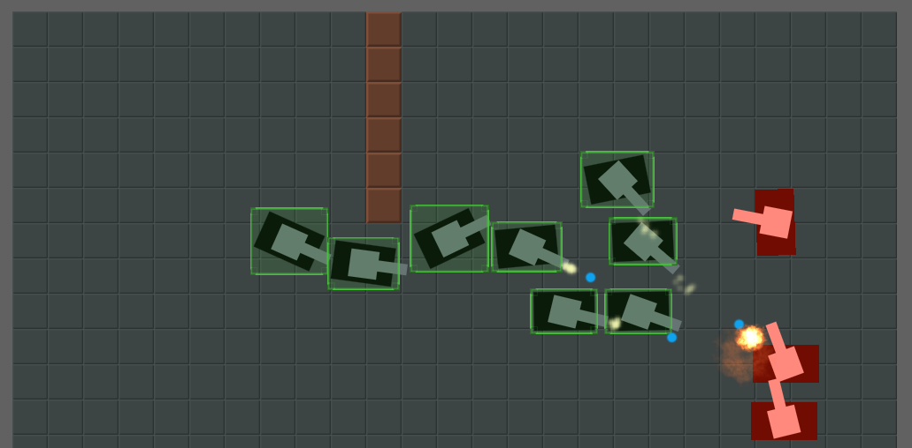
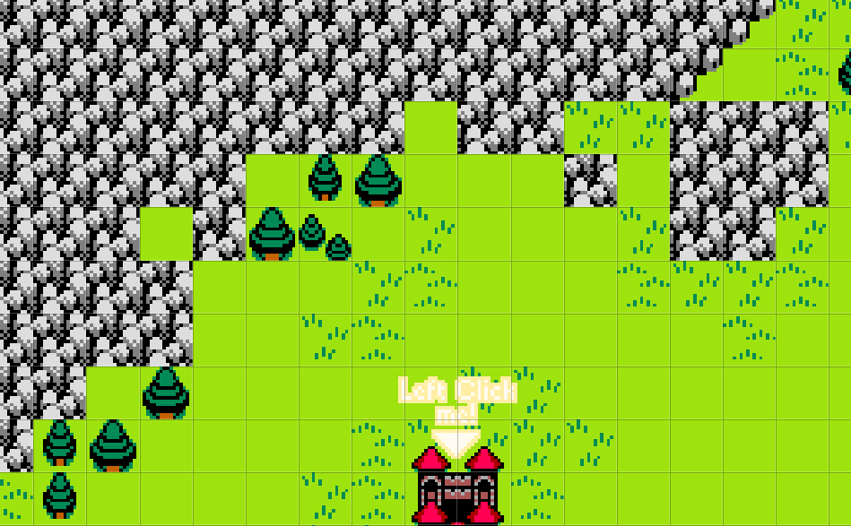
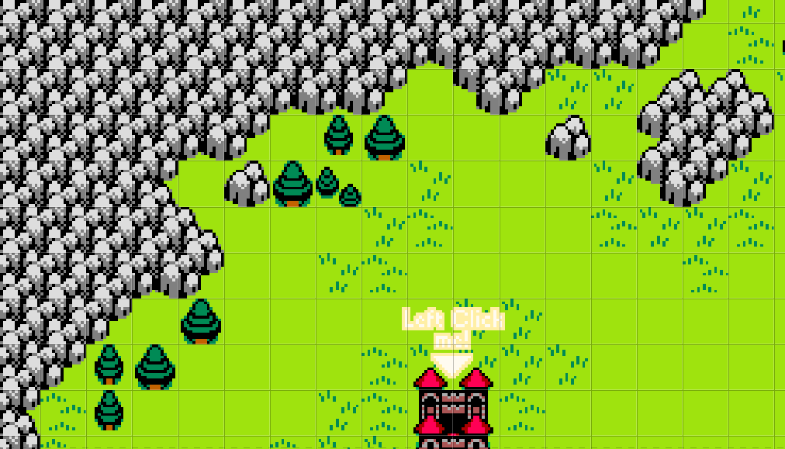
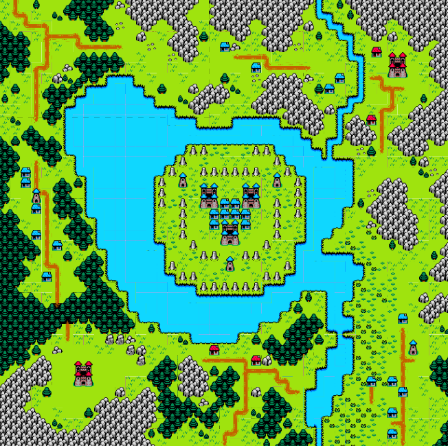

This is a Real Time Strategy game I made in a month for a game jam, and man, what a fun game to make! The combination of working with Construct, using a great tileset and having a free month to make it probably helped to make it one of the less stressful projects I've done.
One of the optional jam themes asked us to "play as the villain", and my mind somehow went directly to an evil lord commanding his minions. For a quick jam game, I was considering Construct 2 and RPGMaker at the time, when I saw one of the bundled example projects for C2 had an RTS engine, with full-on mouse select and (an admittedly not great implementation of) pathfinding.

With that set, I needed to find the assets I'd use. I found this cute one called Blowhard in OpenGameArt that also had soldiers and monsters, so that was perfect. I'd like to point out how the tile terrains are set up in a 9x9 grid, with both corner and side tiles, which made the mapping workflow really fast.

First I mapped the rough shape for the terrain...

...then I manually placed edges and corners to taste.
The game is about spawning and controlling units to take over buildings to let you make different units, until you take over all the enemy castles, a very simple gameplay loop. While I was aware of RTS games and played a lot of turn strategy games, I didn't ever play a real time strategy game on mouse before, so I didn't even know what buttons or keys were conventional. Thankfully, one of my friends played StarCraft2 quite a bit so I queried them on what buttons were used to select and command units and so on.
As an extra challenge I decided to make the music by myself, using Beepbox. I'm not great at sound but I think they're serviceable. This also gave me room to experiment with adaptive music, inspired by the modern Fire Emblem games: I have three songs playing at the same time, with progressively more tense instrumentation, but only one is unmuted at any time. The game has functions to swap which track is audible, and those are triggered when your units enter combat or when your buildings are under attack. I love when games do this so I always try to include some sort of adaptive audio in my projects when I can.
Eventually, I had made all my 3 levels for a total 30 minutes of playtime, per jam suggestion, but there were still 2 weeks left until the deadline. I took a week off for studies while some friends over Discord playtested the game, then went back to polish some stuff like movement and mouse input. For the hell of it I also made a fourth, much larger level in an hour or so as well as a level select/skip mechanic as quality-of-life for jam players.

Yes, this took an hour to design, map and set-up. The tileset is that good.
In the end, Monster Siege wasn't a masterpiece but it was well received. While not an easy game, later stages did show a more silly and sandbox-y quality to it, by letting you take multiple routes and build your army in unique combinations. I remember one of my friends stalled for resources until he could build an unstoppable army of 50+ skeletons to cross the lake with.
And also important, it was a really fun project to work on. I set my scope low, used an easier engine and simple assets, and took a few breaks. Sometimes week-long jams can feel a bit cramped to me, and 48h jams are still not viable for my sleep and work schedule, but month-long jams hit the sweetspot I think.